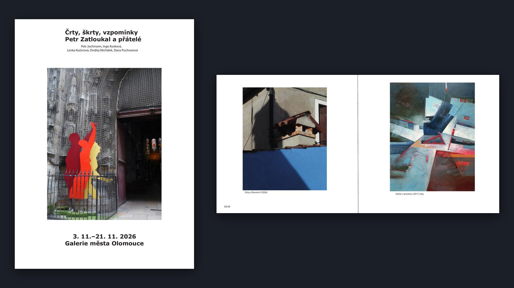

Půda, pokusy a laboratoř
Cinematický 3D interiér — sci-fi chodby a laboratoř vymodelované a nasvícené v Blenderu.
Blender
Cycles
3D prostředí
Tohle portfolio je prostor, kde ukazuji, co tvořím, co se učím a kam se posouvám.
Cinematický 3D interiér — sci-fi chodby a laboratoř vymodelované a nasvícené v Blenderu.
V progressu, takze zatim neznámá
JEDNA VĚTA — jaký problém projekt řeší

V progresu
progress 2028???
Anatomy body, style
VÝZVA K AKCI — např. Máte podobný projekt v hlavě?
Domluvit spolupráci